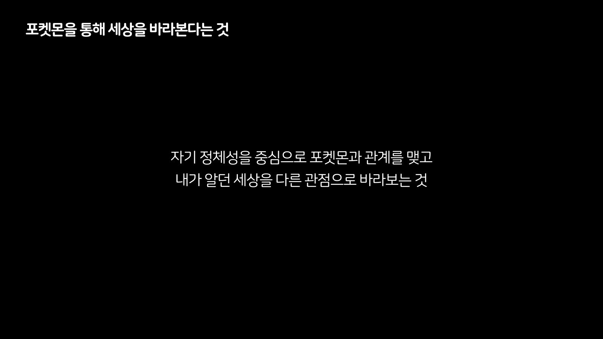
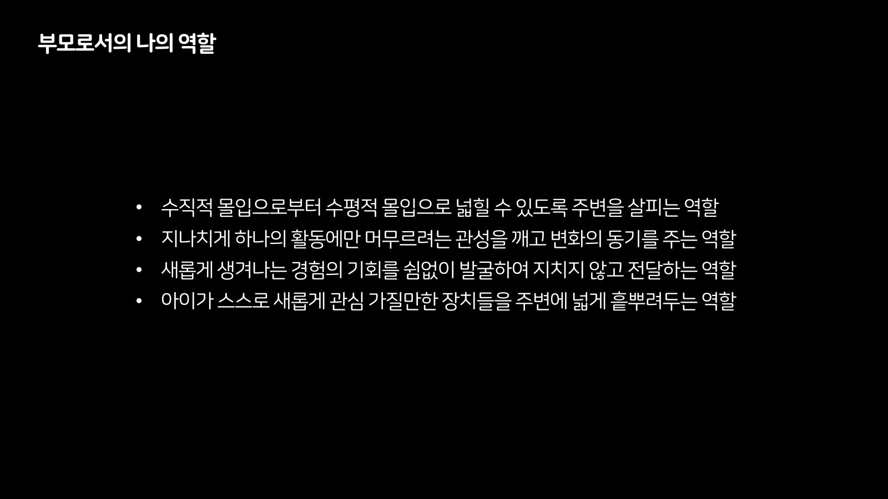

이 글은 그 차이를 하나의 결론으로 합치지 않는다. 2016년부터 2023년까지 반복해서 적은 방법, 원고와 발화의 차이, 아이의 직접 발화와 내가 적은 비율 메모, 부재 기록의 정정은 서로 다른 갈래다. 닿는 곳은 있지만 같은 이야기는 아니다.
시리즈 안내 : 이 글은 세 편 가운데 마지막이다. 1편은 「낯선 세계, 부모가 먼저 들어간다」, 2편은 「포켓몬 아저씨, 홀로 하던 것이 함께가 되기까지」였고, 3편은 그 두 글을 준비하며 새로 확인한 기록의 차이를 다룬다.
012016년에 혼자 먼저 들어갔다
2016년에 나는 혼자 해외 테마파크를 돌았다. 2023년 발표를 준비하며 쓴 원고에는 포켓몬고 출시 직후의 나홀로 테마파크 투어라고 적었다.
그 기록은 7년 연대의 첫 시점이다. 다만 2016년의 투어가 뒤의 육아 방법이나 발표를 예정했다는 증거는 없다. 그때 혼자 먼저 가 본 사실과, 뒤에 아이와 함께하게 된 사실을 시간순으로 놓을 수 있을 뿐이다.
02방법을 여러 번 다시 적었다
2019년의 한 강연 말미에 나는 「아이와 노는 방법」을 여섯 절로 적었다. 그 방법의 배경으로 내가 가진 독학 중심의 학습 경험과 교육 철학을 적었다. 관심이 생기면 다양한 방식의 경험 기회를 마련하고, 한 관심에서 익힌 것을 다른 영역에서 활용하는 방법도 넣었다.
그 문서에서 나는 인터페이스를 스스로 익혀 질문을 떠올리고 답을 찾도록 돕는다고 적었다. 아이가 스스로 탐구하고 답을 찾아가는 훈련도 함께 적었다.
공룡에 대해서는 박물관에서 처음 만난 뒤 스티커북으로 그림과 이름을 연결하고, 그림책으로 기본 특성을 익히는 순서를 적었다. 오래 모아 둔 AR 콘텐츠로 상호작용하고 카드를 모은 뒤, AR 화석 채굴을 실물 키트로 확장한다고 썼다. 다큐멘터리로 내용을 더 보고, 테마파크와 VR에서 실제 스케일의 공간을 경험하고, 시뮬레이션 게임으로 창작하고 설계하는 데까지 적었다.
지하철에 대해서는 일부러 기차와 지하철을 반복해서 경험하고 철도박물관으로 넓힌다고 적었다. 지도와 도서 앱으로 스스로 탐구하고 답을 찾으며, 노선도와 도로 표지판으로 위치와 주변 관계, 길과 방향을 이해한다고 썼다.
책과 장난감은 오래 모은 것을 성장에 맞춰 조금씩 상속한다고 적었다. 캐릭터와 스토리 자체보다 가족과 놀이·경험 중심의 관계를 형성하고, 스마트폰보다 콘솔, 터치스크린보다 컨트롤러를 쓴다고 적었다. 경쟁보다 성취와 성장을 두었다. 창의·컴퓨터 교육 절에는 언젠가 내가 직접 참여해 완성한 프로그램을 아이가 이용하게 된다면 특별한 의미가 있다고 썼다.
2020년에는 문장을 더 짧게 썼다. 부모로서의 고민은 막아설 것인가, 먼저 가보고 이끌어줄 것인가라고. 2016년에는 혼자 먼저 가 본 기록이 있고, 2019년에는 단계가 있는 방법이 있고, 2020년에는 두 선택지가 있으며, 2023년에는 그것을 발표 자료와 원고로 다시 정리했다. 네 시점에 비슷한 낱말이 있지만, 어느 하나를 나머지의 기원이나 결론으로 정할 수는 없다.
03원고에 마흔여섯 쌍의 취소선을 남겼다
2023년 발표의 최종 원고에는 취소선이 46쌍 있다. 초안에는 취소선이 한 쌍도 없다. 편집 결정이 최종 원고에 남은 것이다.
취소선에는 자기소개 전체와 포켓몬 이름의 유래, 포켓몬스터의 역사, 포켓몬 세계관을 설명하려던 절이 포함됐다. 아이들이 참석한다는 소식을 들은 뒤 나는 발표 방향을 바꿨다고 원고 첫 줄에 적었다.
그렇다고 취소선을 버린 목록이라고 부를 수는 없다. 뺀 자기소개 일부를 질의응답에서 실제로 말했기 때문이다. 취소선을 언제 그었는지, 왜 각 줄을 뺐는지는 파일로 알 수 없다. 확인할 수 있는 범위에서는 본편에서의 유보라고 부르는 편이 맞다.
04질문을 받은 뒤 다시 나온 말
취소선으로 뺀 자기소개에서 나는 자라온 배경과 공부, 프리랜서로 일해 온 방식을 적었다. 본편에서는 그 덩어리를 뺐다. 그러나 발표가 끝난 뒤 질문을 받자 나는 아버지가 학자셨다는 점과 프리랜서로 일해 왔다는 사실을 말했다.
그 방식으로 사는 사람을 바라보는 주변의 시선에 대해서도 말했다. 여기서 옮길 수 있는 것은 내가 한 말뿐이다. 누가 무엇을 물었는지, 참석자들이 어떻게 반응했는지는 이 글에 쓰지 않는다.
원고에서 뺐다가 질문 뒤에 말했다는 사실만으로, 처음부터 그 순서를 계획했다고 할 수는 없다. 반대로 취소선을 그었으니 말하지 않기로 했다고 단정할 수도 없다. 원고, 본편, 질의응답은 같은 날을 향하지만 서로 다른 층으로 남았다.
05아이의 한 문장과 내가 적은 비율
아이의 직접 발화는 한 문장으로 남아 있다. 「가서 동물의 숲에서 일이나 해」다.
내가 적은 비율 메모는 「내 인생의 2%, 아이 인생의 10%」다. 이 비율을 나이나 정확한 기간으로 바꾸지는 않는다.
여기서 확인되는 것은 아이의 직접 발화와 내가 적은 시간 비율이 각각 남아 있다는 데까지다. 그 밖의 상황이나 아이의 생각은 두 기록으로 알 수 없다.
06새벽의 없음이 저녁에 뒤집혔다
이 발표의 영상을 찾기 시작했을 때, 먼저 내가 모아 둔 아카이브 안을 살폈다. 전사 결과물과 음성 파일, 백업과 파일 목록을 확인한 뒤 그 범위 안에는 없다고 기록했다. 그날 새벽의 판정에는 검색한 범위와 방법과 날짜를 함께 적었다.
같은 날 저녁, 내가 바깥 채널에서 영상을 발견했다. 아카이브 안에는 없었지만 내가 보관하던 다른 자리에 있었다. 영상이 들어오면서 발표 자료와 원고만으로는 확인할 수 없던 실제 발화가 다시 열렸다.
처음 기록이 옳았던 것은 아니다. 처음 기록에는 아카이브 내부라는 범위가 있었고, 새 자료는 그 바깥에서 나왔다. 범위를 적어 두었기 때문에 빠진 곳을 특정할 수 있었고, 그래서 판정을 고칠 수 있었다.
07계획은 실행을 대신하지 않는다
영상이 들어온 뒤 나는 새벽 기록을 지우지 않고 탐색 범위를 좁혀 고쳤다. 아카이브 내부에서는 찾지 못했고, 같은 날 바깥에서 발견했다고 적었다.
원고에는 말하려던 내용이 있고 영상에는 실제 발화가 있다. 두 기록은 겹치지만 같지 않다. 원고에서 취소선으로 뺀 말이 질문 뒤에 다시 나온 사실도 두 기록을 함께 놓아야 확인할 수 있다.
2016년의 투어, 2019년의 방법, 2020년의 선택, 2023년의 발표는 시간순으로 놓을 수 있다. 아이의 직접 발화와 내가 적은 비율 메모는 별도 기록에 있고, 영상의 발견과 정정은 2026년에 일어났다. 이 글에서는 이 기록들을 한 계획의 결과로 합치지 않았다.


08계획과 실행 사이
2016년에는 혼자 먼저 가 본 일을 적었다. 2019년에는 반복 경험과 스스로 탐구하는 방법을 적었고, 2020년에는 막아설지 먼저 가볼지를 물었다. 2023년에는 그 방법을 발표로 다시 만들었다. 서로 닿는 부분은 있지만 같은 문장을 일곱 해 동안 밀고 온 것은 아니다.
최종 원고의 취소선과 질문 뒤에 나온 자기소개는 발표에 관한 두 기록이다. 아이의 직접 발화와 내가 적은 비율 메모, 같은 날 고친 부재 판정은 각각 다른 자리에서 생겼다. 이 글에서는 네 갈래의 차이를 그대로 두었다.